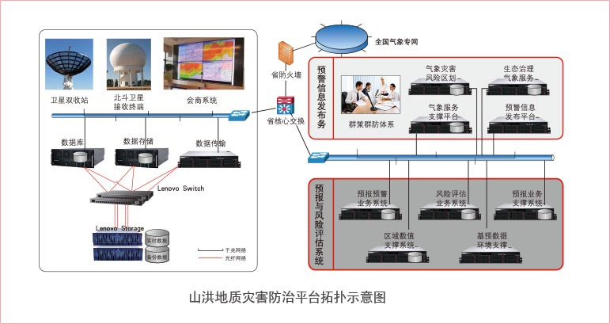
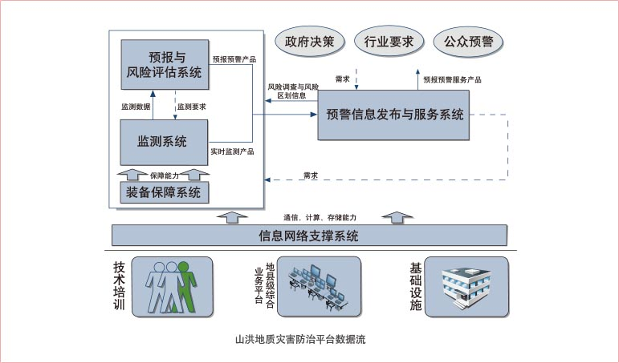
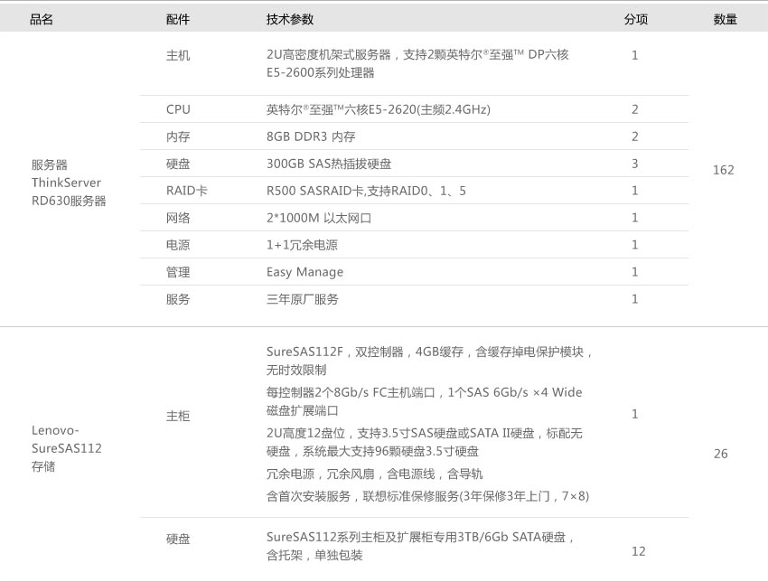
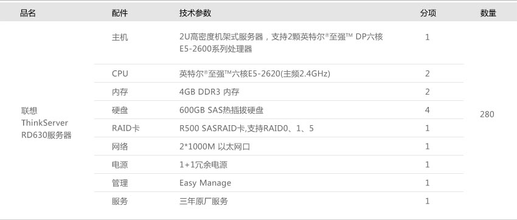

项目需求
项目中主要建设以预报预测信息网络系统、预警服务系统为主。
-
预报预测信息网络系统
山洪地质灾害精细化气象预报预警系统的建设包括山洪地质灾害的精细化定量降水估测、短时强降水实时监测和短时临近预报，以及山洪地质灾害临界雨量和预警指标的确定。
中小河流防汛精细化气象预报预警系统的建设包括中小河流防汛的精细化定量降水估测和过程降水预报、短时强降水实时监测和短时临近预报，以及中小河流致洪临界雨量和预警指标的确定。
-
预警服务系统
建立基于县级预警平台的气象灾害预警服务系统；同时在县级行政区域内的部分乡镇安装电子显示屏，并建设乡镇气象信息综合服务站；在乡镇所辖村配备乡村气象灾害预警机、应急预警收音机和预警发布大喇叭，并建立村级气象信息服务点。
系统逻辑结构设计
山洪地质灾害防治平台主要依附在原有国家气象专网；在各地省、市分别建立防治分中心，经数据处理汇总后，向中央提供数据，形成一整套数据链。
- 山洪地质灾害防治省级拓扑

- 山洪地质灾害防治数据

方案系统设计
山洪地质灾害防治平台从整体分布及系统数据流上看，各系统主要包括：
- 监测系统：由自动雨量站、自动气象站、移动天气雷达、局地天气雷达、风廓线雷达、自动探空站、雷电观测站、自动土壤水分观测站以及云、能见度、天气现象等自动观测系统等构成。
- 预报与风险评估系统：由预报预警业务系统、灾害风险评估系统、预报分析业务支撑系统、数值预报业务支撑系统、基础数据环境等构成。
- 预警信息发布与服务系统：由气象灾害预警信息发布系统、基层气象防灾减灾群测群防体系、气象灾害风险区划系统、易灾地区生态环境综合治理气象服务系统和气象服务系统支撑平台构成。
- 信息网络支撑系统：由地面广域网系统、局域网系统、边远通信系统、信息业务软件系统、气象会商系统、信息安全系统、应急通信系统、业务规范体系、历史气象资料安全管理和数字化等构成。
- 装备保障系统：由运行监控系统、仪器设备维修平台、计量检定标校系统等构成。其中运行监控系统由运行状态监控、数据质量监控、观测环境监控、运行保障信息、运行监控业务管理、监控分析服务、基础技术支撑等分系统构成。
其中同信息系统相关的部分主要又分为两大部份：
- 预报预测信息网络系统
- 预警服务系统为主，针对系统数据流压力，联想推荐以下配置方案:
预报预测信息网络系统、预警服务系统为分别采用联想最新一代服务器产品联想ThinkServer RD630服务器；RD630可搭载两颗Intel®最新Romley平台的XeonTM E5-2600系列高端两路处理器，最高可达16颗处理核心，足以满足预报预测、预警服务发布平 台对CPU的扩展需要，本项目选用性价比较高的E5-2620六核CPU。除此之外RD630还拥有20 DIMM高达640GB内存，本次配置16GB(省)/8GB(地市)，最大16TB的存储容量，可满足预报预测、预警服务发布平台对于系统性能的整体要求。
联想ThinkServer RD630服务器除了拥有优异的性能之外，凭借业界一流的SpecPower成绩，以及软硬结合的能效管理系统，将成为国家气象局IT基础设施能效优化的有力功臣，大幅节省电能消耗。
预报预测、预警服务发布平台分散在全国各地市，联想ThinkServer RD630 服务器提供了完善的软件系统：可通过 EasyStartup帮助气象局快速部署；通过EasyManage随时随地全面掌控全国系统平台的运行情况；通过EasyUpgrade实现固件便捷升级；通过SmartGrid可实现能效管控。
除此之外基于对平台的安全性、稳定性考虑，给国家级、省级配备了联想SureSAS112光纤存储，通过该存储实现数据的集中存储，其中存储又分为实时即时事件数据区、非实时数据归档区，同时借助于存储实现发布平台数据库和数据存储的HA功能。
产品配置推荐
联想根据预报预测、预警服务发布平台的整体需求推配置如下：
省级

县市级

客户收益
通过本平台的搭建，建设了国家气象局地质灾害防治的预报预测、预警服务发布平台，有效的实现对自然灾害、事故灾难、公共卫生事件、社会安全事件四大类突发公共事件信息的接收、处理和及时发布，使地质灾害防治信息能够快速有效的发布给公众；通过该平台促进国家建设，造福百姓，以及国民经济的迅速发展。